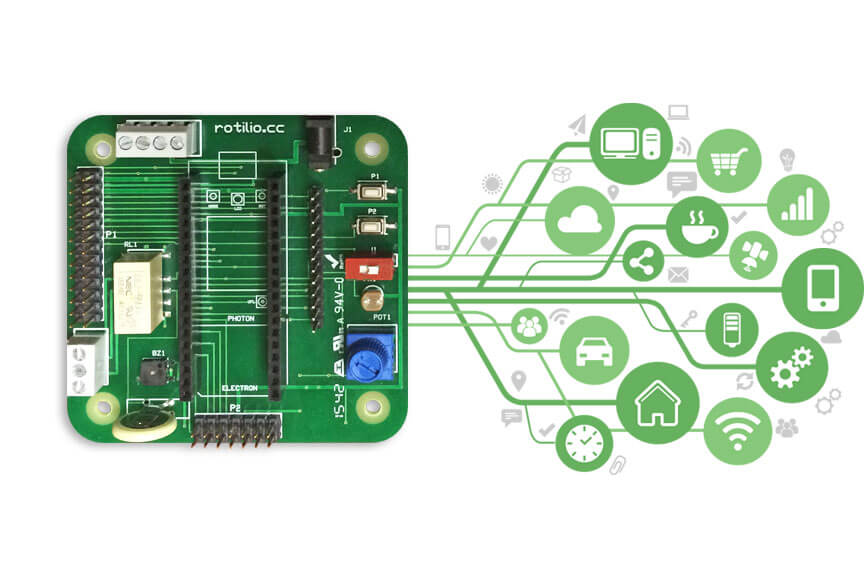

<meta name="description" content=/>

<section class="image-bg pt240 pb240 pt-xs-180 pb-xs-180">
    <div class="background-image-holder">
        </div>
    <div class="container">
        <div class="row">
            <div class="col-sm-6">
                <h1 class="mb0 uppercase bold italic">Homo maker<br></h1>
                <h5 class="uppercase mb32">Ideare soluzioni tecnologiche che anticipino<br>le necessità di domani è la
                    nostra più grande sfida. Costruirle è ciò che sappiamo fare meglio.</h5><a class="btn-filled btn"
                                                                                               href="rotilio.html">Scopri
                Rotilio</a>

                <p class="lead mb0"><br></p>
            </div>
        </div>

    </div>

</section>

<section class="bg-primary">
    <div class="container">
        <div class="row">
            <div class="col-md-4 col-md-offset-1 text-right text-left-xs col-sm-5">
                <h1 class="uppercase mb24 bold italic">GEEK DI IERI, MAKER DI DOMANI</h1>
                <!-- <h5 class="uppercase italic fade-1-4"><br></h5> -->
                <hr class="visible-xs">
            </div>
            <div class="col-md-5 col-sm-7">
                <p class="lead">
                    Che cos’hanno in comune una sveglia, un frigo rimasto aperto e un social network?</p>

                <p>
                    Se lo chiedeste a noi, penseremmo al fatto che una sveglia, un frigo e un social network hanno un
                    minimo comune denominatore: la possibilità di essere interattivi e connessi, ad altri oggetti o ad
                    altre realtà virtuali.<br>E penseremmo a soluzioni di vita quotidiana per persone come te.
                    <br></p>
                <a class="btn-lg btn" href="rotilio.html">Realizza le tue soluzioni con Rotilio</a>
            </div>
        </div>
    </div>
</section>

<section class="image-edge">
    <div class="col-md-6 col-sm-4 p0"><a href="rotilio.html"></a>
    </div>
    <div class="container">
        <div class="col-md-5 col-md-offset-1 col-sm-7 col-sm-offset-1 v-align-transform right">
            <h2 class="uppercase bold mb40 mb-xs-16">Rotilio, ogni cosa è connessa<br></h2>

            <p class="lead mb40"><strong>L’internet delle cose è un’opportunità per fare business costruendo tecnologie
                abilitanti</strong> (ora puoi fare cose che prima non potevi fare). È l’unione di tecnologie che
                <strong>permettono di realizzare soluzioni utili</strong> per maker, architetti, ingegneri,
                sviluppatori, enti pubblici e aziende, in settori come il monitoraggio ambientale, climatico ed
                energetico, la sicurezza domestica o il design d’interni.<br></p>
            <a class="btn-lg btn" href="rotilio.html">Approfondisci </a>
        </div>
    </div>

</section>
<section class="image-square right bg-dark">
    <div class="col-md-6 image">
        <div class="background-image-holder">
            
        </div>
    </div>
    <div class="col-md-6 content">
        <h3 class="bold">MAKER REVOLUTION</h3>

        <p class="mb0">
            La nostra piattaforma, composta da hardware e software perfettamente integrati tra loro, costituisce un
            ottimo punto di partenza per i tuoi progetti.
            Assieme alla nostra comunità di partner certificati, siamo pronti a supportarti con suggerimenti, analisi di
            soluzioni, test e percorsi di co-progettazione.<br><br>
        <h6 class="uppercase mb8"><a href="architetti.html">Sei un architetto?</a></h6>
        <h6 class="uppercase mb8"><a href="ingegneri.html">Sei un ingegnere?</a></h6>
        <h6 class="uppercase mb8"><a href="sviluppatori.html">Sei uno sviluppatore?</a></h6><br><br>
        <a class="btn-lg btn" href="maker.html">Approfondisci</a>
    </div>
</section>
<section class="image-square left">
    <div class="col-md-6 image">
        <div class="background-image-holder">
            
        </div>
    </div>
    <div class="col-md-6 col-md-offset-1 content">
        <h3 class="bold">PENSIAMOCI ASSIEME</h3>

        <p class="mb0">Techmakers ti offre l’opportunità di seguire dei corsi di formazione e di aggiornamento per
            imparare a lavorare in maniera disinvolta e creativa con piattaforme e dispositivi. <br>Parleremo di
            tematiche classiche, come quella del primo approccio alla programmazione e al controllo di sensori e
            attuatori. Ma affronteremo anche problematiche concrete, che difficilmente potrai imparare altrove. Qualche
            esempio?<br><br>
        <h6 class="uppercase mb8">Configuriamo assieme un dispositivo wi-fi senza toccarlo</h6>
        <h6 class="uppercase mb8">Aggiorniamo il firmware di un dispositivo da remoto</h6>
        <h6 class="uppercase mb8">Comunichiamo in tempo reale tra dispositivi e app</h6><br><br>
        <a class="btn-lg btn" href="corsi.html">Prenota ora</a>
    </div>
</section>
<section class="image-bg overlay parallax pt180 pb180 pt-xs-80 pb-xs-80">
    <div class="background-image-holder">
        
    </div>

    <div class="container">
        <div class="row">
            <div class="col-md-5 col-sm-6 col-md-push-7 col-sm-push-6">
                <h2 class="bold">INVENTORI CERCASI!</h2>

                <p class="lead mb48 mb-xs-32">Se sai risolvere il cubo di Rubik in dieci minuti e maneggiare un relais
                    non ti spaventa, stiamo cercando te!<br>Siamo alla ricerca di ragazzi e ragazze intraprendenti e
                    intelligenti per lavorare con noi a tecnologie innovative e a idee geniali.<br>Qualifiche
                    preferenziali: ottima conoscenza della lingua inglese e disponibilità a muoversi sul territorio
                    nazionale.<br></p>
                <a class="btn-filled btn" href="mailto:info@techmakers.io">Candidati ora</a>
            </div>
        </div>

    </div>

</section>

				